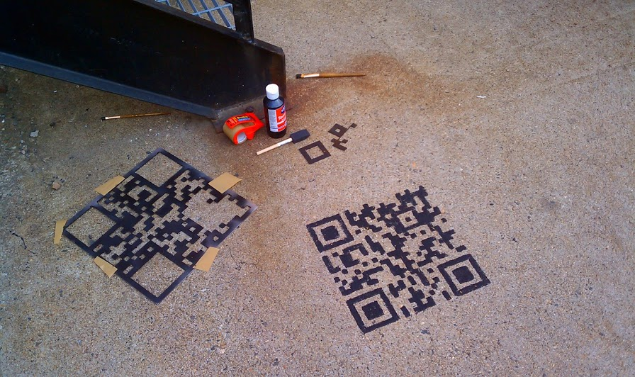
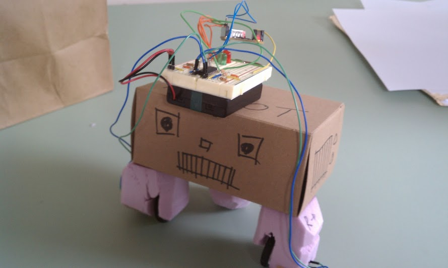
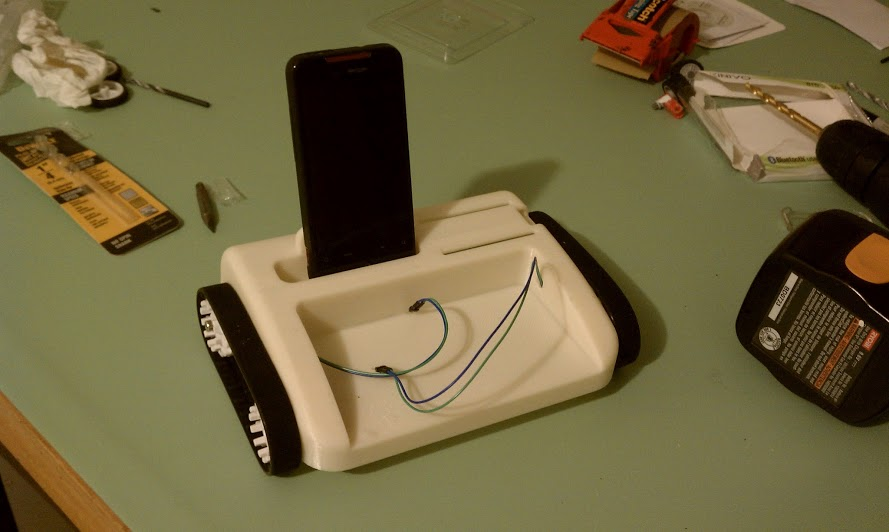

Sam Feller
is an insatiably curious, creative mechanical engineer
Sam has a broad cross disciplinary background that covers electrical engineering, computer science, business, and design. This portfolio contains a mixture of professional and personal projects. Photos of much of Sam's highly technical professional work cannot be shared.
Education
B.S. Mechanical Engineering
WPI Class of 2007, High Honors
Full Scholarship, Dept. Homeland Security
Skills
Precision mechanism design, vibration analysis, Nastran FEA, MathCAD, Solidworks, plastics design, optics mounting
Even more skills
Coding: web develepment, python, java, javascript, C, Arduino
Design: industrial design drawing, graphic design, photography
Business: entrepreneurship, b2b sales, e-commerce
Employment History
Foliage, Inc. Feb 2012-present
Mechanical Engineer - Project based consulting engagements in a client facing role. Responsibilities include proposal writing, requirements definition, schedule planning, design and engineering, build and integration, and knowledge transfer. Typically worked in small teams, working closely with electrical engineers and other disciplines to implement designs.
MIT Lincoln Labs, 2007-2012
Assistant Staff Mechanical Engineer - Worked closely with optical, thermal, and control systems engineers to support system requirements with mechanical designs. Responsibilities included design and analysis, and documentation and supervision of assembly and test procedures.
Projects
Awkward Engineer Creations, LLC
Founder, entrepreneur, small business. End to end development from concept to market. Successfully launched a novelty panic button light switchproduct. Work included component sourcing, supplier and assembly house relationship management, sales, web development, packaging, graphic design and more. Product has sales in the 1000's of units/year. www.awkwardengineer.com
Focus Mechanism for a Satellite Telescope
Worked independently within a larger team, supporting the optical engineers to ensure that the mechanism could meet depth of travel and optical surface quality requirements. Other responsibilities included analysis for random vibration loads. Wrote and supervised the test procedures and correlated test results with finite element models.
Medical Device Case Design
Worked with client and small team of electrical and software engineers to develop a portable EEG. Work included case industrial design, CAD modeling, and eventual transfer to contract manufacturer.
Precision Rotary Encoder Mounting and Alignment
Assisted the control system engineers to make sure that windup errors in the mount did not exceed specifications. Worked with technician to align and install encoders.
Los Alamos National Labs
Awarded Patent #7,627,448. As part of a 3 person team, designed and built a laser tracking system to help automate crime scene evidence/sample collection. Was responsible for hardware design, construction, and programming the microcontroller to interface with the sensor package.
Panic Button Light Switch Kit
Solo project, brought from concept to market. I originally conceived the idea for the Kit when I tried to decorate my bedroom with an e-stop button. No consumer grade products were available, so I decided to make one.
Product currently has sales in the 1000's of units a year, and has been sold through ThinkGeek, Newbury Comics, Fab.com, Urban Outfitters, and other retailers.
Skills used: component selection, vendor management, graphic design, web development, B2B sales, photography
Cookie Dunkr Cup
Independent project to solve "first worldest of first world problems," namely, that it can be hard to reach to the bottom of a glass to dunk your cookie in the last drops of milk.
I led a small team, bringing on a marketer, videographer, video editor, and graphic designer. The Kickstarter project was covered in Wired and the Boston Globe, raised just under $8000, but was ultimately unfunded.
After the failed Kickstarter, the design was successfully licensed to the maker of "The Dipr" cookie spoon and is scheduled to go to production in time for the 2013 holidays.

Radar Dome 110,000lb Lift
The radar dome was split and later reassembled as part of a radar dish upgrade program.
Worked as part of a two person team to ensure that the cap could be safely removed and reinstalled. I designed the lifting fixtures and pick points for the 110,000lb lift and analyzed the structure to ensure the split dome halves would fit back together again.
Google Maps satellite imagery of the construction site was still available as of 24 Oct 2013.
Cheetah Conservation Fund, Bushblok Project
Project included both thermal analysis and market field research in Namibia for the Cheetah Conservation Fund's "Bushblok" alternative fuel project.
Thermal analysis included measurement of the energy density of the Bushblok fuel log and considered it as an alternative fuel to coal for electric power generation.
Market research included on site field research in the local Namibian economy, looking for a way to introduce the Bushblok in villages as a replacement for foraged wood.
Roof Inspection Robot
Top Prize, Mech. Eng. Dept, WPI. Delivered a prototype roof inspection robot to client to make inspections safer for claims adjusters. As part of a team of three, helped with the robot design and construction and was responsible for the microcontroller programming.
Promotional QR Code
Promotional project for www.awkwardengineer.com. Stencil was water jet out of scrap aluminum. QR codes were painted with water soluble paint in public places. Drove hundreds of page views per location, until the rain washed them away.
Android Phone Controlled Robot
Developed a remote controlled vehicle, connected via Bluetooth and controlled via a smartphone.
The smartphone was capable of taking data collected from the robot and posting it to a central server. In one version, a "make anything move" kit was developed, where motor blocks could be attached to everyday household objects. It was prototyped in pink foam first and then CAD modeled and 3d printed.

TwitterBox
Interdisciplinary personal art project. Created a desktop display to scroll Tweets. Project used Python, Arduino, industrial design sketching, CAD, and 3d printing.

Doodles
{kind=link}
{kind=link}
{kind=link}
{kind=link}
{kind=link}
Miscellanea
- Inactive clearance, TS//TK//SCI
- Lacrosse Goalie Coach, Lexington HS
- Tau Kappa Epsilon Fraternity
- Tau Beta Pi Honor Society
- Likes to cook
"Creativity is just connecting things. When you ask creative people how they did something, they feel a little guilty because they didn't really do it, they just saw something. It seemed obvious to them after a while. That's because they were able to connect experiences they've had and synthesize new things."
-Steve Jobs